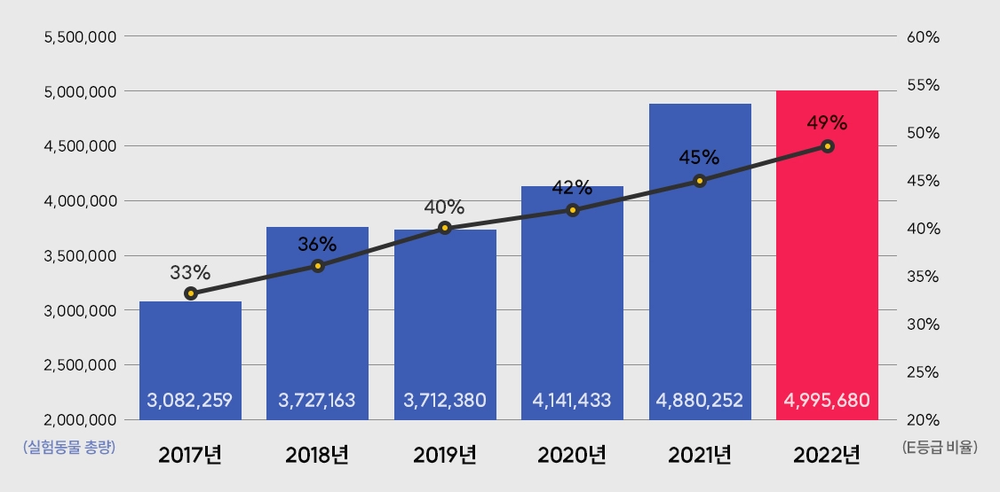
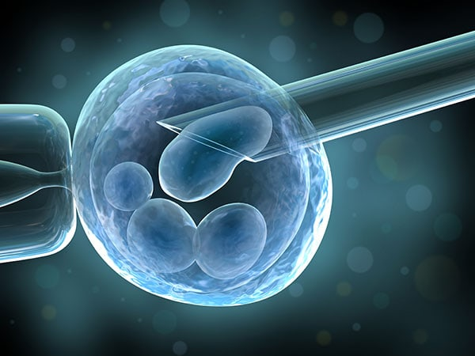
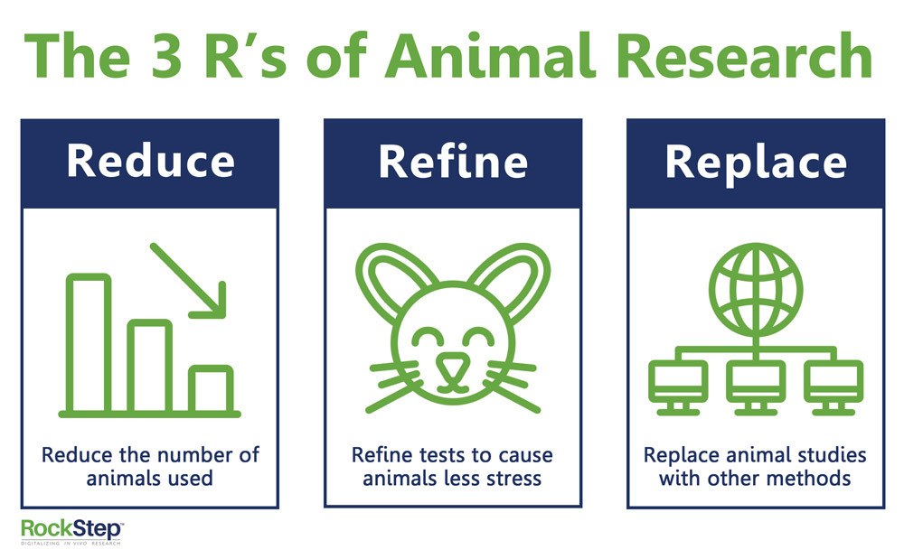

매년 4월 24일은 ‘실험동물의 날’이다.
지난 24일 농림축산검역본부에서 밝힌 2022년에 사용된 실험동물의 수는 약 499만 마리였고, 그중 70% 이상이
실험 과정에서 중등 이상의 고통을 받으며,
36.4%는 죽음에 이를 수 있는 극심한 고통을
겪는다는 사실이 밝혀졌다. 즉, 2022년 한 해에만
거의 350만 마리에 달하는 동물들이 고통을 견디다 죽었다는 것이다.
동물실험 횟수는 해마다 빠르게 증가하고 있는데,
이 동물들은 언제까지 고통을 받아야 하는 것일까?
동물실험을 대체할 방법은 없을까?
이 글에서는 동물실험을 최소화할 수 있도록 하는
다양한 대책과 노력을 다루고자 한다.

현재 시점에서는 동물실험을 완전히 대체할 수 있는
대안이 아직 완벽하게 개발되지는 않았으나,
많은 연구를 통해 나온 다양한 대안과 규제를 통해
동물실험의 최소화와 윤리적인 실험을 지향할 수 있다.
일부 대체 방법으로는 in vitro (체외) 모델,
컴퓨터 모델, 인간 조직의 재생 및 이식, 인간 유전자 편집 기술 등이 있다.
그중 가장 대표적인 in vitro 연구는 생체 외부에서
조직, 세포, 유전자 등을 분리하여 샘플을 조작하고 실험하는 것을 말한다.
in vitro 연구는 다양한 분야의 실험에서 활용되고 있다. 예를 들어
세포독성 시험에서는 인공적으로 배양한 세포를 이용해 시험 대상 물질이
세포에 미치는 영향을 측정하고, 인체 조직의 구조와 기능을 모방한
조직 칩(Tissue chip)을 이용해 체내에서 발생할 수 있는 생리학적 반응을
재현하는 실험을 수행한다. 이 연구는 동물을 사용한 기존의 실험 방법들을
성공적으로 대체할 뿐만 아니라 더욱 정확한 결과를 얻을 수 있도록 한다.
또 조직공학 연구, 미생물 연구, 암세포 연구 등 연구 활동에도
활용될 수 있는데, 특히 약물 개발의 측면에서는 현재 거의 모든 연구가
동물실험을 필요로 하기에 만약 in vitro 기술이 상용화된다면
동물실험 최소화에 크게 이바지할 것으로 예상된다.

또한, 동물실험을 최소화하고 윤리적인 실험을 할 수 있도록
다양한 규제와 지침이 제정되어 있다.
예를 들어
3R(Replacement, Reduction, Refinement) 정책은 동물실험을 최소화하고,
대안을 찾기 위해 노력하며, 실험을 보다 윤리적으로 진행할 수 있도록
지침을 제공한다. 이는 다음과 같은 내용으로 구성되어 있다.
Replacement(대체): 동물을 사용하지 않거나 동물 사용을 최소화할 수 있는 대체 방법을 활용한다.
Reduction(최소화): 실험동물의 재사용, 실험 설계의 최적화, 통계학적 분석 등을 이용해
실험에 사용되는 동물의 수를 최소화한다.
Refinement(개선): 동물의 건강 상태 감시, 적절한 교육 및 훈련,
윤리 관련 검토 등을 통해 동물의 복지와 실험 환경을 개선한다.
3R 정책은 다양한 국제기구와 연구자들로부터 지지를 얻고 있으며,
다양한 동물실험 연구에서 적용되고 있다. 이를 통해 동물의 이익과 복지를
고려하면서도 과학적인 목적을 달성하는 실험을 수행할 수 있다.

이처럼 동물실험 최소화를 위한 노력은 활발히 진행되고 있지만,
상용화되기까지는 아직 갈 길이 멀다. 무엇보다 신약 후보 물질은
임상시험 전에 동물실험을 필수적으로 거쳐야 한다는 현행 규정이
넘어야 할 가장 큰 산이다. 앞서 소개한 신기술들이 동물실험을
완전히 대체하기까지는 시간이 걸리겠지만, 불필요한 동물실험을 줄이는 데 많은 도움이 될 것이다.